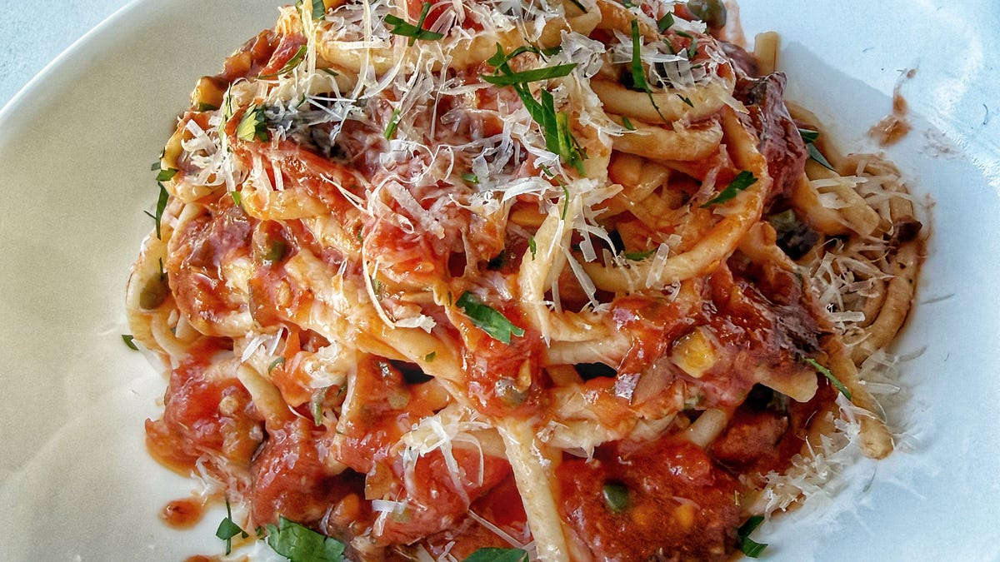

Brine & Fire Noodles
Brine-and-Fire-Noodles • Pasta • Weeknight Puttanesca-Style

A sharp, briny, weeknight pasta built on a puttanesca-style base: anchovies melted into olive oil, lots of garlic, olives, capers, and chili, all wrapped around just enough linguine to scratch the noodle itch without feeling heavy.
Ingredients
- 1/4 cup extra virgin olive oil
- 1 lb organic linguine
- 4 to 6 oil-packed anchovy fillets
- 8 to 10 cloves of garlic, minced
- 2 teaspoons ancho chili powder or red pepper flakes
- 1/2 cup pitted black olives, chopped
- 1/2 cup chopped Kalamata olives
- Optional handful of green olives
- 1/4 cup capers, rinsed and chopped
- 1 large 28 oz can whole peeled tomatoes, crushed by hand
- Pinch dried oregano
- 2 tablespoons sherry vinegar
- 4 tablespoons unsalted butter
- 1/2 cup freshly grated Parmigiano Reggiano
- 1/2 cup chopped flat-leaf parsley
- Fresh cracked black pepper
Method
- Bring a large pot of well-salted water to a boil, using slightly less water than usual so the pasta water is extra starchy.
- In a wide sauté pan or Dutch oven, add the olive oil, anchovy fillets, and minced garlic. Turn the heat to medium.
- Cook gently, letting the anchovies melt into the oil without browning the garlic. Stir in the chili flakes and dried oregano and lightly fry for about 30 seconds.
- Add the chopped black olives, Kalamata olives, any green olives if using, and the chopped capers. Sauté 2–3 minutes to bloom everything in the oil.
- Add the crushed tomatoes (crush by hand or with a wooden spoon in the pan). Simmer 8–10 minutes until slightly thickened and saucy.
- Meanwhile, cook the linguine just shy of al dente.
- Using tongs, transfer the pasta directly from the pot into the sauce (do not rinse). Add a splash of the starchy pasta water.
- Toss over medium heat, letting the pasta finish cooking in the sauce. Add more pasta water as needed until the noodles and sauce are cohesive and glossy.
- Add the butter and toss until fully melted and emulsified into the sauce.
- Remove from heat and stir in the Parmigiano, chopped parsley, sherry vinegar, and plenty of fresh cracked black pepper. Taste and adjust seasoning as needed.
Variations & Add-Ins
Puttanesca is a base, a canvas. Here are ways to elevate it depending on your mood.
Add Protein
- Seared shrimp finished in the sauce
- Crispy pancetta or guanciale
- Grilled swordfish chunks folded in at the end
- Oil-packed tuna gently flaked through
- White beans for a rustic, peasant version
- Soft-poached egg on top for richness
Add Depth
- Spoon of tomato paste caramelized before the tomatoes go in
- Splash of dry white wine reduced before adding tomatoes
- Pinch crushed fennel seed
- Calabrian chili paste for deeper heat
- Touch of anchovy paste for extra umami
Add Freshness
- Lemon zest right at the finish
- Torn fresh basil
- Arugula folded in off heat
- Fresh oregano instead of dried
Add Texture
- Toasted sourdough breadcrumbs in olive oil
- Crushed Marcona almonds
- Pine nuts toasted in butter
- Crispy garlic chips
Extra Extra Credit
- Finish with bottarga shaved over the top
- Stir in a spoon of mascarpone for a silkier version
- Splash of good balsamic for subtle sweetness
- Charred cherry tomatoes folded in at the end
Summary: This is weeknight puttanesca with a bit of swagger—anchovies, olives, capers, chili, and a quick emulsified finish so the sauce actually clings to the noodles instead of pooling in the bottom of the bowl.